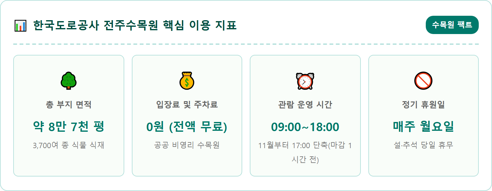
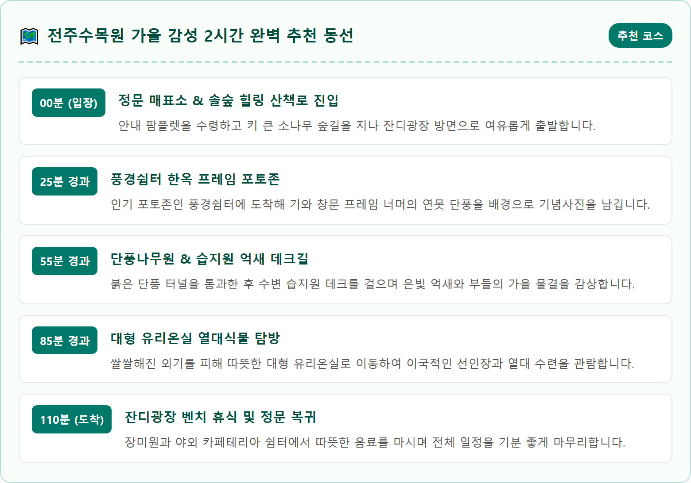
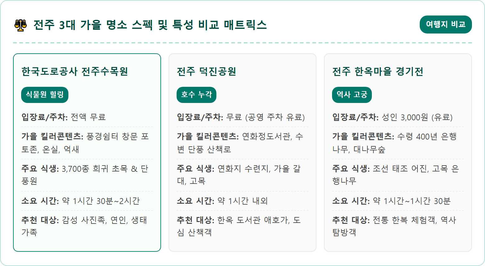
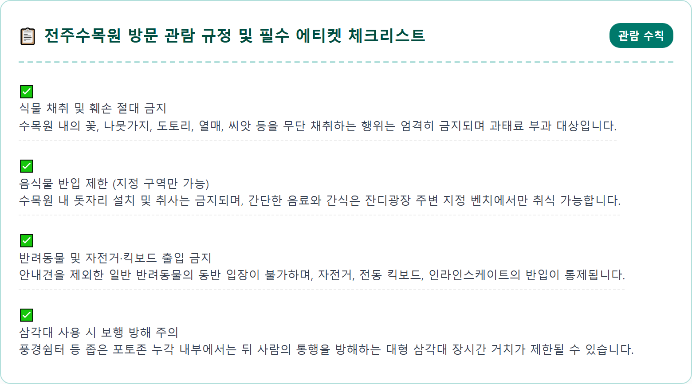
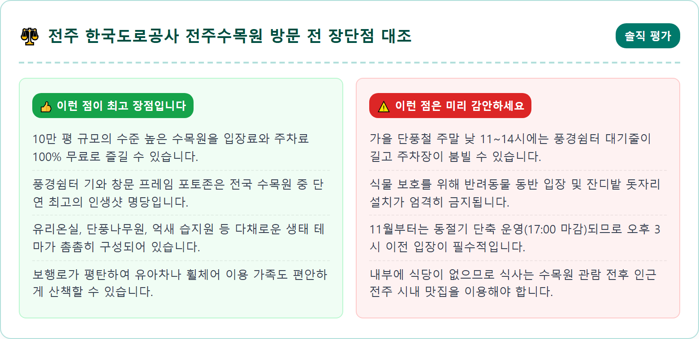
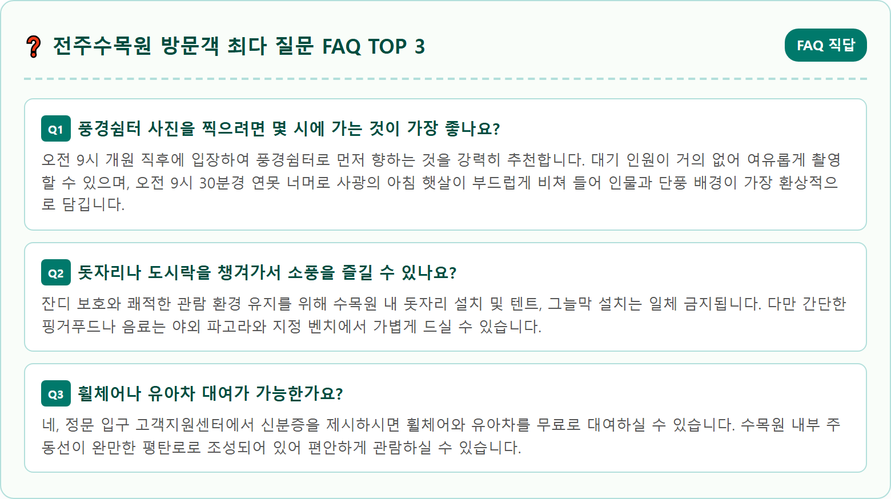

A picturesque view through the open traditional Korean wooden pavilion window at Korea Expressway Corporation Jeonju Arboretum during peak autumn. The rustic square wooden frame and dark curved tile roof overlook a tranquil pond covered with delicate lotus leaves, surrounded by fiery red maple trees, brilliant yellow ginkgo, and lush green weeping willows. Soft warm golden hour sunlight reflecting beautifully on the still water surface. In the background, modern glass greenhouse dome structure visible through autumn foliage. Peaceful, aesthetic, serene atmosphere. Photorealistic photography, 8k resolution, crisp textures, natural lighting, perfect rule of thirds composition.

전북특별자치도 전주시 덕진구 번영로에 자리 잡은 한국도로공사 전주수목원은 전국에서 유일하게 공기업인 한국도로공사가 운영하는 비영리 공공 수목원입니다. 1974년 고속도로 건설 당시 불가피하게 훼손된 자연생태계를 복구하기 위해 묘목을 생산하고 식물 유전자원을 보존하는 묘포장으로 처음 출발했습니다. 반세기에 가까운 세월 동안 정성 어린 관리와 증식을 거듭하며 현재는 29만㎡(약 10만 평) 규모의 거대한 부지에 3,700여 종에 달하는 다양한 초목이 자라나는 생태계의 보고로 눈부시게 진화했습니다.
전주수목원의 가을은 그 어느 계절보다 다채롭고 화려한 색채의 향연을 선보입니다. 수목원 입구에 들어서는 순간부터 길게 늘어선 느티나무와 메타세쿼이아 가로수가 황금빛 터널을 이루고, 단풍나무원과 침엽수원, 장미원, 암석원, 약초원 등 테마별로 특화된 24개의 야외 전시원이 저마다의 가을빛을 뽐냅니다. 수목원 중앙의 거대한 생태 연못 주변으로는 붉게 타오르는 당단풍과 수양버들이 물가에 드리워져 고요하고 서정적인 가을 정취를 극대화합니다.
무엇보다 이렇게 수준 높은 수목원 시설을 일반 시민과 관광객 모두에게 1년 내내 아무런 입장료나 주차 요금 없이 무상으로 개방하고 있다는 점은 전주수목원만의 독보적인 미덕입니다. 잘 정돈된 평탄한 보행로를 따라 산책하며 가을의 깊은 정취를 느끼기에 이보다 더 완벽한 힐링 공간을 찾기는 어렵습니다.
전주수목원이 전국의 2030 세대와 사진 애호가들 사이에서 폭발적인 인기를 얻게 된 결정적인 계기는 바로 수목원 안쪽 수변에 자리한 전통 정자 '풍경쉼터' 때문입니다. 풍경쉼터는 한옥 양식의 목조 누각으로, 정자 벽면에 뚫린 네모난 기와 창문 프레임을 통해 건너편 연못과 오색 단풍, 늘어진 버드나무가 그림처럼 한눈에 들어오도록 설계되어 있습니다.
이 창틀에 걸터앉아 연못을 등지고 찍는 실루엣 사진은 마치 살아있는 자연 산수화 액자 속에 사람이 들어가 있는 듯한 몽환적인 분위기를 자아내며 인스타그램 등 SNS를 뜨겁게 달구었습니다. 가을철이면 연못 주변의 단풍나무가 붉게 물들고 수면에 단풍 그림자가 반사되어 연중 가장 극적인 인생 사진을 건질 수 있습니다.
가을 단풍철 주말에는 풍경쉼터 포토존 앞에서 사진을 찍기 위해 30분에서 1시간가량 줄을 서서 대기하는 진풍경이 벌어지기도 합니다. 인생샷을 보다 여유롭게 남기기 위해서는 오전 9시 개원 직후에 입장하여 다른 정원보다 풍경쉼터로 곧장 직행하는 '역발상 동선'을 취하는 것이 가장 좋습니다. 햇살이 창문 안쪽으로 부드럽게 사광으로 비쳐 드는 오전 9시 30분~10시 30분 사이가 인물과 배경의 노출 차이가 적어 가장 아름다운 사진을 완성할 수 있는 골든타임입니다.

풍경쉼터와 함께 전주수목원을 대표하는 실내 랜드마크는 바로 웅장한 돔 구조를 자랑하는 '유리온실'입니다. 가을철 선선한 바람에 숲길을 걷다 보면 서늘해진 체온을 따뜻하게 녹여주는 안식처 역할을 톡톡히 해냅니다. 온실 내부로 들어서면 계절을 잊은 듯한 싱그러운 초록빛 열대 우림의 세계가 눈앞에 펼쳐집니다.
유리온실은 난대식물원, 열대식물원, 다육식물원 등 생태별 구역으로 정교하게 나뉘어 있습니다. 사람 키를 훌쩍 넘는 거대한 기둥 선인장과 용설란, 알로에 등 희귀 다육식물들이 이국적인 사막의 풍경을 연출하며, 천장까지 높게 뻗은 야자수와 몬스테라, 바나나 나무는 마치 동남아시아의 휴양지에 온 듯한 착각을 불러일으킵니다.
온실 중앙에 조성된 인공 수로와 소형 연못에는 열대성 빅토리아 수련과 화려한 꽃을 피운 온실 식물들이 전시되어 있어 관람객들의 발길을 사로잡습니다. 유리 천장을 통해 쏟아지는 가을 햇살이 열대 잎사귀 사이로 부서져 내리는 순간은 야외 단풍과는 또 다른 싱그럽고 따뜻한 사진을 남길 수 있는 명소입니다.
가을 전주수목원의 진정한 생태적 깊이를 맛보려면 '단풍나무원'과 '습지원'을 빼놓을 수 없습니다. 단풍나무원에는 청단풍, 홍단풍, 아기단풍, 공작단풍 등 국내외에서 수집된 수십 종의 다양한 단풍나무 품종들이 밀집해 자라고 있습니다. 나무마다 물드는 시기와 색상의 채도가 미묘하게 달라 노랑, 주황, 다홍, 진홍색이 층층이 어우러지는 화려한 천연 모자이크를 감상할 수 있습니다.
단풍나무원을 지나 물길을 따라 내려오면 드넓은 갈대와 억새가 장관을 이루는 '습지원'에 닿게 됩니다. 자연 상태의 습지 식생을 관찰할 수 있도록 수면 위로 구불구불하게 연결된 목재 데크로드가 설치되어 있어 억새 숲 한가운데를 걷는 특별한 체험을 선사합니다. 가을바람이 불어올 때마다 사각거리며 부딪히는 은빛 억새의 군무는 가을의 낭만을 절정으로 이끕니다.
습지원 데크 주변에는 수련과 부들, 창포 등 다양한 수생식물들이 서식하고 있으며, 맑은 물속을 헤엄치는 비단잉어와 물새들을 가까이서 관찰할 수 있어 어린이를 동반한 가족 단위 탐방객들에게 훌륭한 자연 생태 학습장이 되어줍니다.

전주수목원을 방문할 때 가장 세심하게 확인해야 할 행정 사항은 바로 계절에 따른 운영 시간의 변동입니다. 수목원은 연중 하절기와 동절기로 나누어 탄력적으로 관람 시간을 운영하고 있습니다. 3월부터 10월까지 적용되는 하절기에는 오전 9시부터 오후 6시까지 개방되며 입장 마감은 오후 5시입니다. 반면, 해가 짧아지는 11월부터 이듬해 2월까지의 동절기에는 오전 9시부터 오후 5시까지로 운영 시간이 1시간 단축되며 입장 마감 시간 역시 오후 4시로 앞당겨집니다.
특히 10월 말에서 11월 초로 넘어가는 환절기에는 마감 시간 변경을 인지하지 못하고 늦은 오후에 도착했다가 입장을 거부당하는 사례가 종종 발생합니다. 수목원 부지가 10만 평에 달해 전체를 여유롭게 둘러보려면 최소 1시간 30분에서 2시간이 소요되므로, 늦어도 오후 3시 이전에는 입장해야 어두워지기 전에 여유로운 산책과 사진 촬영을 마칠 수 있습니다.
또한 매주 월요일은 정기 휴원일(월요일이 공휴일인 경우 익일 휴원)로 지정되어 있으며, 설날과 추석 명절 당일에도 휴원하므로 헛걸음하지 않도록 방문 요일을 사전에 반드시 체크하시기 바랍니다.
한국도로공사 전주수목원은 정문 바로 앞에 약 300대 이상을 동시에 수용할 수 있는 대형 무료 전용 주차장을 갖추고 있습니다. 일반 승용차 주차 구역은 물론 대형 관광버스 전용 주차 공간과 장애인 전용 주차면, 전기차 급속 충전 시설이 잘 정비되어 있습니다.
평일에는 언제 방문해도 주차 공간이 넉넉하여 쾌적하게 주차할 수 있지만, 10월 중순부터 11월 초순까지 이어지는 가을 단풍 피크 시즌 주말에는 상황이 크게 달라집니다. 특히 오전 11시부터 오후 3시 사이에는 수목원으로 진입하는 번영로 일대부터 서행 정체가 빚어지며 주차장이 가득 차는 경우가 빈번합니다.
주말에 방문한다면 개원 시간인 오전 9시에서 10시 사이에 일찍 도착하는 것이 최상의 전략입니다. 만약 정오 무렵 만차 상태에서 도착했다면 무리하게 주차장 입구에서 대기하기보다는, 도로 안내 요원의 지시에 따라 수목원 진입로 갓길 임시 주차 구역을 이용하거나 인근 조촌동 공영 주차 공간에 차를 대고 5~10분 정도 걸어 들어오는 것이 시간을 아끼는 비결입니다.

전주수목원의 또 다른 매력 포인트는 탐방로 중간에 자리한 넓은 '잔디광장'과 가을에도 피어나는 '가을 장미원'입니다. 잔디광장은 푸른 잔디밭 주변으로 키 큰 느티나무들이 그늘을 드리우고 있어 산책 중 잠시 벤치에 앉아 가을바람을 쐬며 휴식을 취하기에 안성맞춤입니다. 돗자리를 펴는 것은 잔디 보호를 위해 제한되지만, 곳곳에 목재 테이블과 파고라 쉼터가 마련되어 있어 텀블러에 담아온 따뜻한 차나 물을 마시기에 좋습니다.
사계절 장미원에서는 5월의 봄 장미 못지않게 그윽한 향기를 뿜어내는 가을 장미들을 만날 수 있습니다. 서늘한 가을 기온 속에서 꽃잎의 색채가 더욱 짙어진 붉은 장미와 노란 장미가 오색 단풍나무와 묘한 색채 대비를 이루며 이색적인 볼거리를 제공합니다.
유아차나 휠체어를 동반한 가족 방문객을 위한 편의시설도 훌륭합니다. 정문 고객지원센터에서 신분증을 제시하면 휠체어와 유아차를 무료로 대여할 수 있으며, 수목원 내 대부분의 주요 동선이 계단 없는 평탄한 흙길과 아스팔트, 데크로드로 포장되어 있어 유아차를 밀며 산책하기에 전혀 무리가 없습니다.

수목원에서 2시간여의 기분 좋은 가을 산책을 마쳤다면, 맛의 고장 전주의 미식을 경험할 차례입니다. 전주수목원이 위치한 조촌동 일대와 덕진구는 전주 시내 중심가로 진입하는 관문으로, 유명 향토 맛집들과의 접근성이 매우 뛰어납니다. 가을철 서늘한 바람을 맞은 후에는 뚝배기에 보글보글 끓여 나오는 시원하고 칼칼한 '전주 콩나물국밥'이 제격입니다. 수란에 김가루를 얹고 따뜻한 국물을 몇 숟가락 끼얹어 먹는 남부시장식 콩나물국밥은 산책의 피로를 단번에 날려줍니다.
보다 풍성한 식사를 원한다면 오색 나물과 황포묵, 육회가 어우러진 전통 '전주비빔밥'이나 놋그릇에 따뜻하게 담겨 나오는 돌솥비빔밥을 추천합니다. 정갈한 10여 가지 밑반찬과 함께 즐기는 비빔밥 한 그릇은 눈과 입이 모두 즐거운 남도 미식의 정점을 선사합니다.
식사 후에는 차로 15분 거리의 '전주 한옥마을'로 이동하여 고즈넉한 돌담길과 경기전의 400년 은행나무 단풍을 둘러보거나, 덕진공원의 연화정도서관에서 호수를 바라보며 책 한 권의 여유를 즐기는 1일 드라이브 코스를 추천합니다. 전주수목원에서 시작해 한옥마을로 이어지는 하루 일정은 자연과 전통, 미식이 완벽하게 어우러진 최고의 가을 여행이 될 것입니다.

한국도로공사 전주수목원은 반세기 동안 수많은 사람들의 헌신적인 손길로 가꾸어 온 소중한 생태 자산이자 도심 속 자연의 오아시스입니다. 무료로 개방되는 훌륭한 공공시설인 만큼, 이곳을 찾는 탐방객들의 높은 시민의식이 무엇보다 중요합니다. 예쁜 단풍잎이나 꽃을 꺾는 행위, 떨어진 도토리를 주워 담는 행위는 숲속 야생동물들의 먹이 사슬을 파괴하는 일이므로 절대 삼가야 합니다.
아름다운 풍경쉼터 포토존에서도 뒷사람을 배려하여 1인당 1~2분 이내로 신속하게 촬영을 마치고 자리를 양보하는 성숙한 배려가 필요합니다. 걸음걸음마다 자연의 숨결을 느끼고, 눈으로만 감상하며 가을의 평화로운 순간을 마음속에 담아가는 것이 수목원을 아끼는 가장 품격 있는 태도입니다.
붉은 단풍과 은빛 억새, 따뜻한 온실의 푸르름이 한데 어우러진 전주수목원은 늦가을 정취를 만끽하고자 하는 모든 여행자에게 기대 이상의 벅찬 감동을 선사합니다. 번잡한 일상에서 벗어나 자연의 품에서 깊은 위로를 얻고 싶다면, 이번 주말 사랑하는 사람과 함께 한국도로공사 전주수목원으로 가을 단풍 여행을 떠나보시길 바랍니다.